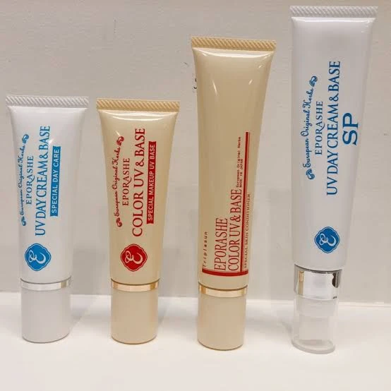
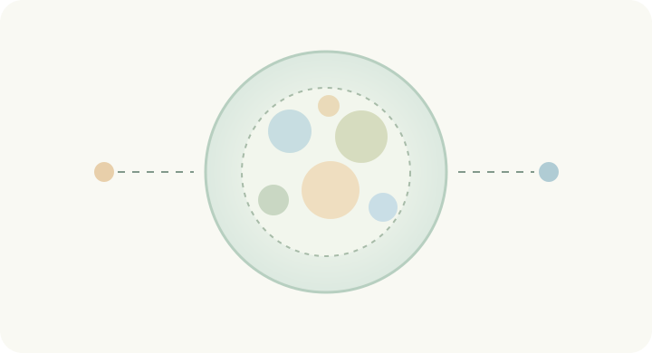

明るい季節のはじまりに。
紫外線が増え始める春。いつもの朝にUVケアをプラス。
EPORASHE / ALL SEASON UV BASE
SUNLIGHT, EVERY SEASON.
毎日のUV対策を、もっと心地よく。
仕方なく塗るUV対策から、
毎日使いたくなるUVベースへ。

ALL SEASONS※商品写真はご提供いただいた集合写真です。高解像度の原本への交換を推奨します。
01 / THROUGH THE YEAR
日差しが穏やかな日も、紫外線は降り注いでいます。
毎日の身支度に、UVケアという小さな習慣を。
紫外線が増え始める春。いつもの朝にUVケアをプラス。

日陰や帽子も上手に活用して、こまめに塗り直しましょう。

涼しい日も紫外線はゼロではありません。習慣をそのままに。

冬も屋外ではUV対策を。外出時間や環境に合わせて。
季節の画像はオリジナル生成イラストです（実写ではありません）。季節とUV対策：環境省「紫外線環境保健マニュアル2020」を参考に構成。
02 / THE EPORASHE IDEA

公式説明では、UVカット剤をアミノ酸成分やうるおい成分が配合されたマイクロカプセルに閉じ込める製法。紫外線対策と、肌のうるおいへの配慮を両立するための工夫です。
基本の透明タイプから、さらに軽い付け心地をうたうSPタイプまで。毎日手に取りたくなる感触を探せます。
色なしの透明タイプと、肌色を自然に整える色付きタイプ。仕上がりの好みから選べます。※色補正はメイクアップ効果によるもの。
技術説明・商品特徴：EPORASHE公式各商品ページ。カプセルの図は理解のための模式図であり、実際の微細構造・効果を示すものではありません。
03 / FIND YOUR FIT
まずは、仕上がりと使う場所から。
※カラーUVは商品説明とカテゴリ一覧でSPF表記が異なります。以下は商品説明本文の「SPF50 PA+++」に基づく暫定表記です。公式カテゴリとの相違があるため、公開前に正式表記を確認してください。
04 / PERSONAL UV FINDER
3つの質問で、暮らしと好みに合う一本を。
05 / FINISH & TEXTURE
UVデイクリーム＆ベース／SPは、どちらも無色透明タイプ。首元やデコルテにも。
カラーUV＆ベース30gはイエロー系ベージュ。自然なカバー感が欲しい日に。
カラーUV＆ベース45gはピンク系ベージュ。素肌感を演出したい日に。
色面は分類を示すデザインで、実物の色見本・塗布比較ではありません。実際の塗布写真の撮影後、差し替えが必要です。
06 / YOUR MORNING ROUTINE
化粧水・美容液など、いつものスキンケアから。
公式の顔用使用目安はパール一粒位。顔全体にムラなくなじませてください。
必要に応じてファンデーションやフェイスパウダーを重ねます。
汗・摩擦などで落ちたときは塗り直しを。屋外では2〜3時間おきが一般的な目安です。
塗布量は公式商品ページ、塗り直しの目安は環境省「紫外線環境保健マニュアル2020」より。製品の用法と環境に合わせて調整してください。
07 / FOR EVERYDAY
色をつけずに整えたい朝は、透明タイプ。
カラータイプとパウダーで、軽やかな仕上がりを。
短い外出でも、紫外線対策を習慣に。
全身に使用可能と公式に案内されている透明タイプを。
08 / FREQUENTLY ASKED
UV対策用として使えます。紫外線の強さや活動時間に合わせ、帽子・日傘なども併用してください。色付きタイプはライトファンデーションとしても公式に紹介されています。
はい。公式に化粧下地として案内されています。UVベースをなじませてから、好みのベースメイクを重ねます。
透明タイプは色をつけずに使え、顔・首元・全身に使用可能。カラータイプはベージュの色味で肌色を自然に整えるメイクアップ効果が特長です。
汗や摩擦で落ちるため、塗り直しが大切です。屋外では2〜3時間ごと、または落ちたときに塗り重ねることが一般的な目安です。
冬でも紫外線は届きます。日差しや屋外での活動に合わせて対策するのがおすすめです。
今回確認した公式情報だけでは4商品の洗浄方法を統一して断定できません。各商品の公式案内をご確認ください。メイクを重ねた場合は使用したメイク製品の落とし方にも従ってください。
09 / THE COLLECTION
いつもの一日に、あなたらしい一本を。